06. Prediction Models
Version: CE Express v7.2
- Objective This module explains how prediction models are used in CE Express, how different models influence calculation results, and how model parameters can be adjusted to reflect different environments and scenarios. The exercise focuses on understanding model behavior, comparing results, and creating custom model configurations. By the end of this exercise, participants will be able to:
- Understand how CE Express evaluates radio visibility conditions
- Work with different prediction models and their configurations
- Change prediction models at the cell level
- Modify key model parameters and observe their impact
- Create and manage custom prediction model configurations
- Compare prediction results generated using different models
-
Understanding Prediction Models in CE Express Prediction models define how signal propagation losses are calculated across the coverage area. Instead of applying a single formula everywhere, CE Express evaluates the radio visibility condition between a transmitter and each receiver point and applies the most appropriate loss calculation for that condition. This approach allows near-deterministic modeling, where terrain, obstacles, and clutter are explicitly considered for every calculation pixel.
-
Prediction models The CE Path Loss Modelling aims to perform near-deterministic calculation of received signal levels at each specific point (pixel) in the network’s target coverage area by applying selective
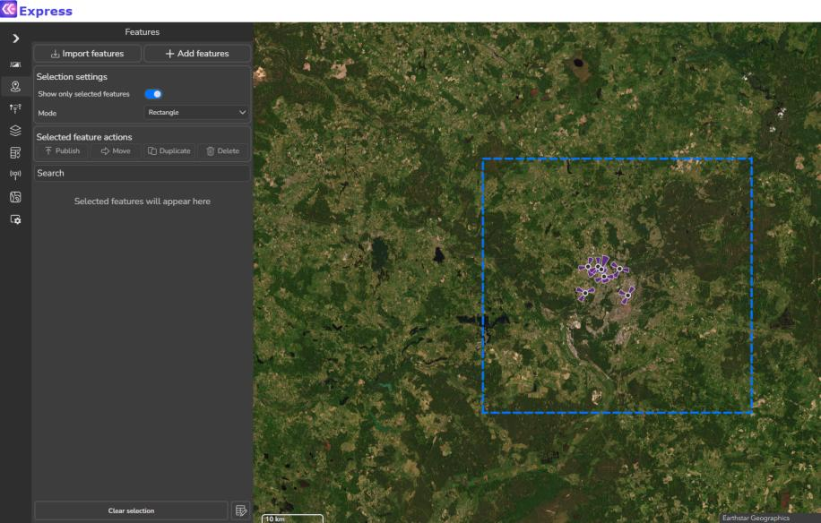
path loss model depending on the radio visibility condition between the transmitter antenna vis-à-vis a receiver antenna located at a given point in coverage area. The radio visibility is evaluated based on the DTM, Obstacles and Clutter path profile information, as described in previous section. This verification of radio visibility will result in the receiver antenna point assigned into one of three possible radio visibility conditions: - Line-of-Sight (LOS) – occurs when there are neither terrain irregularities, obstacles or clutter interposing the direct radio path between the transmitter and receiver antennas. The radio path is understood to include the 1st Fresnel zone around the direct line and account for Spherical Earth effect. The LOS condition is illustrated by the path profile depicted in Fig. 1(a). - Obstructed LOS (OLOS) – occurs when the direct radio propagation line is interposed by clutter, see illustration in Fig. 1(b). - Non-LOS (NLOS) – occurs when the direct radio propagation line is interposed by terrain bulges or obstacles, see illustration in Fig. 1(c).(a) Example of path profile with LOS condition (green line of direct radio link) (b) Example of path profile with OLOS condition (yellow segment of radio link path)


 (c) Example of path profile with NLOS condition (red segment of radio link path)
(c) Example of path profile with NLOS condition (red segment of radio link path)
(d) Example of path profile with OLOS+NLOS condition (yellow+red segment of radio link path) Fig. 1. Illustration of different LOS conditions 1. Depending on the LOS condition for the receive antenna at specific location (area map pixel), the CE tools will apply the specific sub-set of path loss prediction model, as explained in the following section. 2. Note that when the receiver is located indoors, the special Outdoor-to-Indoor propagation function will be applied in addition to basic path loss, as explained in the separate section at the end of this
 chapter.
chapter.
3.1 Models
CEC ITU-R 3GPP Model (100MHz – 6GHz) is a combination model intended for use in a variety of different radiocommunication systems which is derived explicitly from ITU-R path loss modelling methods as follows: a. Receive antenna in LOS condition – path loss calculated as FSL based on Recommendation ITU- R P.525 (ref URL). b. Receive antenna in OLOS condition – total path loss modelled as a combination of basic FSL calculated based on Recommendation ITU-R P.525 (ref URL) with included dual slope option and clutter loss modelling based on Recommendation ITU-R P.2108 (ref URL). c. Receive antenna in NLOS condition – path loss as a combination of basic FSL calculated based on Recommendation ITU-R P.525 (ref URL) with included dual slope option, additional losses due to diffraction calculated based on Recommendation ITU-R P.526 (ref URL). d. Receive antenna in OLOS+NLOS condition – path loss as a combination of basic FSL calculated based on Recommendation ITU-R P.525 (ref URL) with included dual slope option, additional losses due to diffraction calculated based on Recommendation ITU-R P.526 (ref URL), and clutter loss modelling based on Recommendation ITU-R P.2108 (ref URL). e. Receive antenna in the clutter (building, vegetation, etc) – path loss is calculated as described above based on LOS, OLOS and NLOS conditions, and additional penetration loss is added to simulate Outdoor-to-Indoor scenario which is based on ITU-R P.833 recommendation (if receiver is in vegetation type clutter) or based on 3GPP TR 38.901 (ref URL) (if receiver is in a building). ITU-R P.452 Model (6GHz – 50GHz) is provided as a universally applicable model with a very wide
frequency range from 0.1-50 GHz. Its implementation is based on the methodology described in the Recommendation ITU-R P.452 (ref URL). This model does not provide for definition of OLOS visibility condition; instead, it considers clutter as part of the general obstacles category and accordingly distinguishes only two radio visibility cases: a. Receive antenna in LOS condition – path loss model based on FSL principle. b. Receive antenna in NLOS condition – total path loss modelled using a combination of basic transmission losses and losses due to diffraction. LOS ITU-R P.525 Model (6GHz – 100GHz) is the FSL path loss calculated based on the method in Recommendation ITU-R P.525 (ref URL). As such it could be used for modelling radio links where LOS is considered a necessary condition, e.g., for Fixed (Point-to-Point) Links or Mobile Systems in mmWave bands. UniMacro Model (400MHz – 3GHz) is the CE’s proprietary combination model developed over the years of practical experience with the operational planning of cellular mobile networks in the frequency ranges from 400-3000 MHz. It had been fine-tuned to produce coverage predictions that are most closely aligned with what could be expected to be experienced by the actual mobile network users in the field. The model will model different path losses depending on radio visibility conditions as follows: a. Receive antenna in LOS condition – path loss model based on FSL principle and dual slope based on breakpoint distance. b. Receive antenna in OLOS, or NLOS condition – path loss modelled using Extended Hata (Open Area) model with additional losses due to diffraction calculated based on Recommendation ITU-R P.526 (ref URL). c. Receive antenna in the clutter (building, vegetation, etc) – path loss is calculated as described above based on LOS, OLOS and NLOS conditions, and additional penetration loss is added to simulate Outdoor-to-Indoor scenario which is based on ITU-R P.833 recommendation (if receiver is in vegetation type clutter) or based on 3GPP TR 38.901 (ref URL) (if receiver is in a building). 4. Exercise
4.1 Step 1 – Open the Workspace
- Open the CE Express application: https://cecom2.cellular-expert.com/ce_express/
-
From the workspace list, select the workspace used in the previous exercise.
-
Step 2 – Reviewing Prediction Models Open Prediction Models tool
- Open the Prediction Models tool.
- Browse available models and configurations.
- Select CEC ITU-R (100 MHz – 6 GHz) and review its parameters.
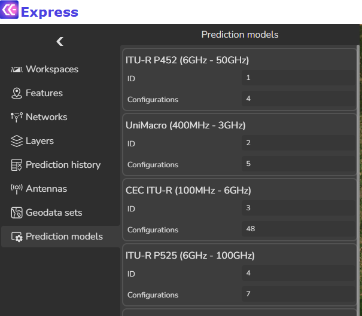
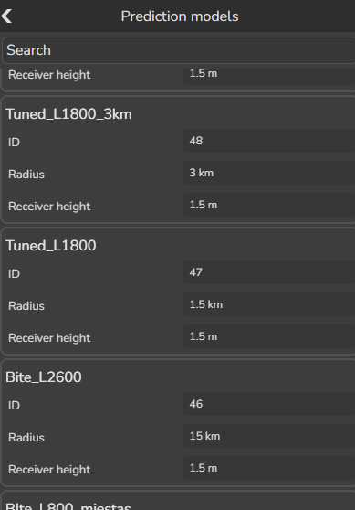
5.1 Step 3 – Assigning Prediction Models to Cells
Assigning a prediction model to a cell determines which propagation logic and parameter set will be used when calculations are performed. This step is critical because the selected model directly affects how terrain, clutter, distance, and frequency are interpreted during prediction.
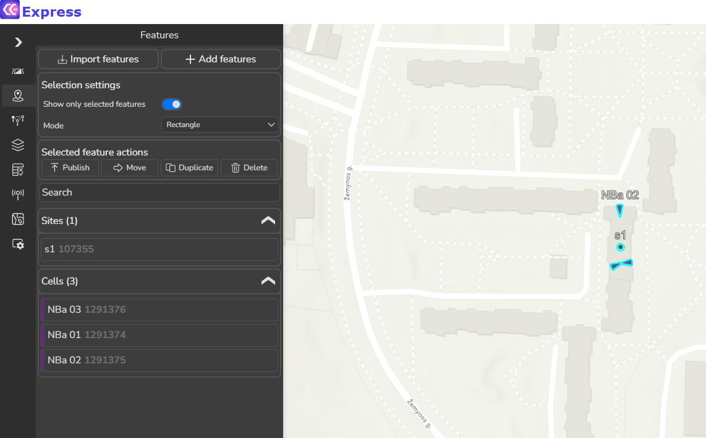
Prediction models are assigned at the cell level, which means different cells within the same workspace can use different models or different configurations of the same model. 5.1.1 Selecting Cells for Model Assignment 1. On the map, locate and select the following cells: - NBa 01 - NBa 02 - NBa 03 2. Confirm that all selected cells are highlighted. Only selected cells will be affected by model assignment changes. 5.1.2 Assigning a Prediction Model to a Cell 1. Click on NBa 01 in Features tool to open the Edit Feature panel.- Scroll to find the Prediction model parameter.
- Click on this parameter to open the context menu. The menu lists all available prediction model configurations defined in the workspace.
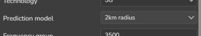
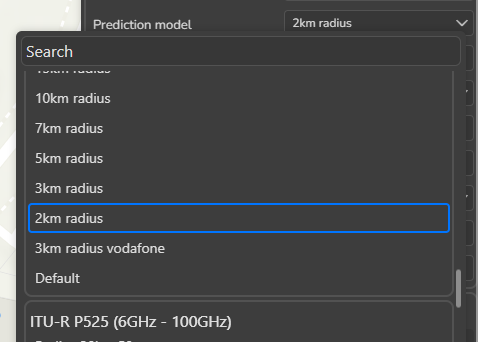
5.1.3 Reviewing Available Models Before selecting a model, review the list and note: - Model name and configuration name - Intended frequency range - Maximum calculation radius - Environment assumptions This review helps ensure the selected model matches the intended scenario. 5.1.4 Applying the Model 1. Select the appropriate prediction model configuration from the list. 2. Click Accept to apply the change. Repeat this process for NBa 02 and NBa 03.5.2 Step 4 – Running Predictions and Comparing Results
Once prediction models are correctly assigned to cells, the next step is to run RF predictions
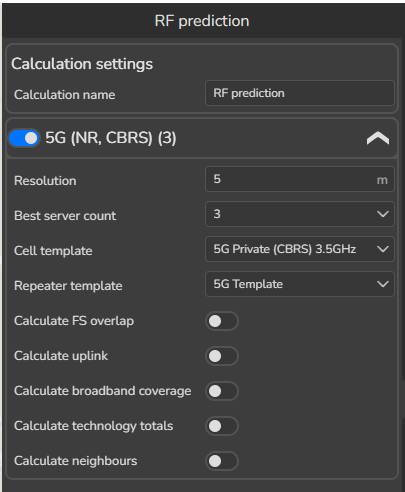
and systematically compare the results. This step transforms model configuration into visual outputs and allows users to understand how different models and parameters influence calculated results. Running predictions is not only about generating maps, it is about ensuring that results are produced in a controlled, repeatable manner so meaningful comparisons can be made. 5.2.1 Running the Initial Prediction 1. Open the RF Prediction tool. 2. Review calculation parameters make sure that they match with defined in the picture below. 3. Click Calculate to start the prediction. A calculation task is created and executed in the background. 5.2.2 Loading Prediction Results 1. Once the calculation is complete, open Prediction History. 2. Locate the most recent prediction task. 3. Open 5G 3500 Field Strength 1, dBm.The prediction raster is loaded on the map and listed under Prediction Results in the
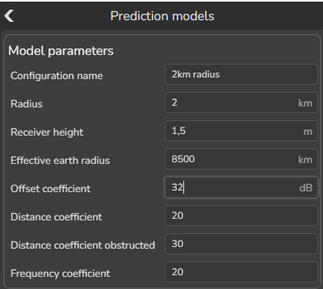
Layers panel. 5.2.3 Establishing a Baseline Result The first prediction result acts as a baseline. Before making any changes: - Observe overall coverage shape - Note areas of strong and weak signal - Zoom into representative locations This baseline is essential for understanding the impact of later changes.5.3 Step 5 – Modifying Model Parameters and Observing Impact
- Open Prediction Models → CEC ITU-R → 2 km radius configuration.
- Change Free Space Loss KOff from 45 to 32.
- Run predictions again. After successful calculation, open 5G 3500 Field Strength 1, dBm prediction results. Now, we have two layers loaded to Prediction results.
Compare them visually. Then open Identify tool and click on the map. Field Strength for second prediction is higher by 13 (because we defined lower Offset Coefficient value by 13). Now change Distance coefficient value from 20 to 30. Press Accept and RF run predictions again. After successful calculation, open 5G 3500 Field Strength 1, dBm prediction results. Compare the predictions using Identify tool.
5.4 Step 6 – Understanding Building Clutter Parameters
Building clutter parameters describe how man-made structures affect signal propagation.
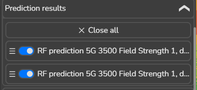
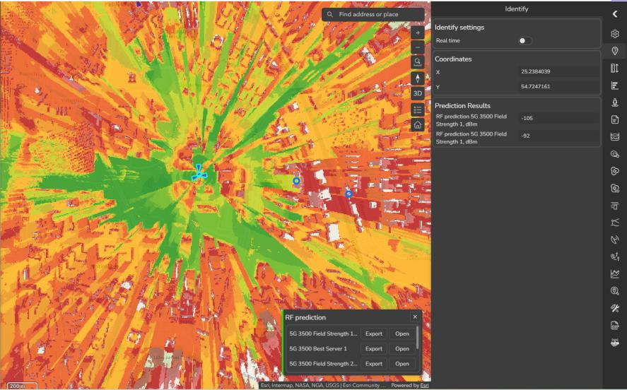
These parameters are critical in environments where buildings are a dominant factor influencing visibility, attenuation, and diffraction.
Rather than treating buildings as simple blockers, CE Express models their impact through a set of configurable parameters that control how loss is introduced as signals interact with
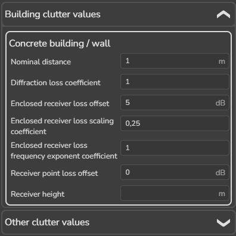
built environments. 5.4.1 Purpose of Building Clutter Modeling Building clutter modeling is used to: - Represent attenuation caused by walls, roofs, and dense construction - Simulate diffraction around building edges - Account for penetration losses when receivers are located indoors - Reflect differences between open areas and dense urban zones Accurate clutter configuration ensures that predictions reflect realistic environmental behavior rather than idealized free-space conditions. 5.4.2 Accessing Building Clutter Parameters 1. Open Prediction Models. 2. Select the active prediction model configuration (e.g. CEC ITU-R – 2 km radius). 3. Expand Building clutter values. This section contains parameters that specifically control how buildings influence the path loss calculation.Key Parameters: - Nominal distance, m – the average distance between objects within the clutter class, ranging from 1 to 100 meters. - Diffraction loss coefficient – a multiplier used in diffraction calculations. Lower values result in reduced diffraction loss, while higher values increase it. Typically, this coefficient is higher for buildings compared to forests or other clutter types.ltiplier for diffraction calculations. If value is lower, diffraction will be lower, if higher – then diffraction will be
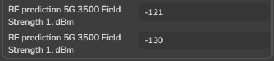
higher. Usually, for buildings clutter class this parameter is higher then forest or other clutter classes. - Enclosed receiver loss offset, dB – the initial entry loss into the clutter class, expressed as an offset in dB, which is added to the path loss grid. - Enclosed receiver loss scaling coefficient – represents additional signal loss as a function of the distance traveled within the clutter class. Higher values increase path loss. - Enclosed receiver loss frequency exponent coefficient – reflects additional loss inside the clutter class based on frequency. Higher values increase path loss, particularly at higher frequencies. - Receiver point loss offset, dB – an additional loss offset in dB applied to the path loss grid, representing user equipment (UE) losses. 5.4.3 Observing the Impact of Parameter Changes 1. Change Diffraction Loss Coefficient from 1 to 1.3. 2. Click Accept. 3. Run RF predictions again. After successful calculation, open 5G 3500 Field Strength 1, dBm prediction results. After recalculation, observe: - Reduced signal strength in areas obstructed by buildings - Greater contrast between open and built-up areas These changes confirm the role of building clutter parameters in shaping prediction results.5.5 Step 7 – Creating, Applying, and Evaluating a Custom Prediction Model Configuration
Creating a custom prediction model configuration allows users to tailor propagation behavior to a specific scenario, environment, or analysis objective. This step combines model creation,
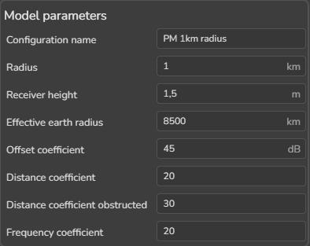
model assignment, and result evaluation into a single, coherent workflow. Instead of modifying standard models directly, custom configurations preserve original references while enabling controlled experimentation and scenario-specific tuning. 5.5.1 Creating a New Model Configuration 1. Open Prediction Models. 2. Select the base model CEC ITU-R. 3. Click + New Configuration. Define the following parameters: - Model Name: PM 1km radius - Maximum Radius: 1 km - Effective Earth Radius: 8500 - Receiver Height: 1.5 m - Free Space Loss Offset: 45 - Distance Coefficient (LOS): 20 - Distance Coefficient (Obstructed): 30 - Frequency Coefficient: 205.5.2 Configuring Environmental Parameters Expand the following sections and configure values according to the training reference:
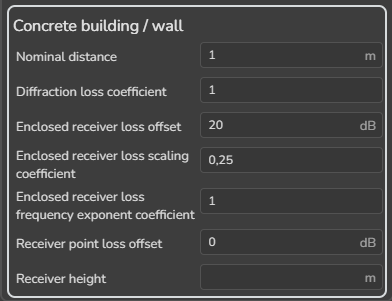
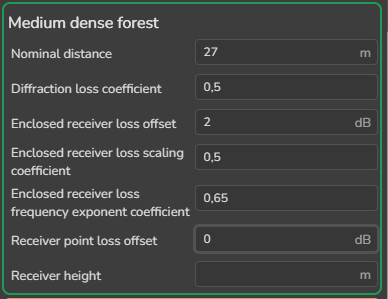
- Building clutter values - Other clutter values These settings control how urban structures and non-building obstacles influence propagation behavior. Once all parameters are defined, click Accept to save the configuration.5.5.3 Applying the Custom Model to Cells 1. Select the cells: - NBa 01 - NBa 02 - NBa 03 2. Open Edit Feature for each cell. 3. Assign the newly created model configuration (PM 1km radius) as the prediction model.
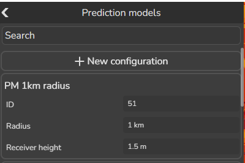
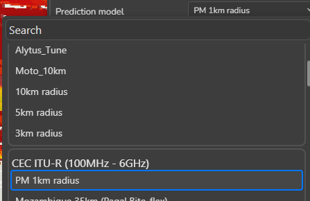
5.5.4 Running Predictions with the Custom Model 1. Open the RF Prediction tool. 2. Run predictions for the selected cells. 3. Open the resulting Field Strength output from Prediction History.Close all prediction results in Layers tool.
5.6 Step 8 – LOS-Only Prediction for mmWave
High-frequency systems, particularly in the millimeter-wave (mmWave) range, behave very differently from lower-frequency deployments. At these frequencies, signal propagation is
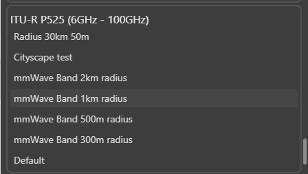
highly dependent on clear Line of Sight (LOS), and even small obstructions can completely block connectivity. This step demonstrates how to use LOS-only prediction models in CE Express to accurately represent these conditions. 5.6.1 Selecting and Assigning an LOS-Only Model 1. Select the cell Cx002 on the map. 2. Open Edit Feature. 3. Locate the Prediction model parameter. 4. Assign LOS ITU-R P.525 – mmWave Band 1km radius. This model applies Free Space Loss only and evaluates signal strength exclusively where LOS conditions are met. 5.6.2 Reviewing LOS-Only Model Parameters 1. Open the Prediction Models tool. 2. Select LOS ITU-R P.525 – mmWave Band 1km radius.Key characteristics to review: - Free Space Loss formulation - Maximum calculation radius - Receiver height assumptions 5.6.3 Running the LOS-Only Prediction
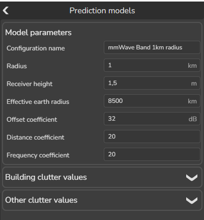
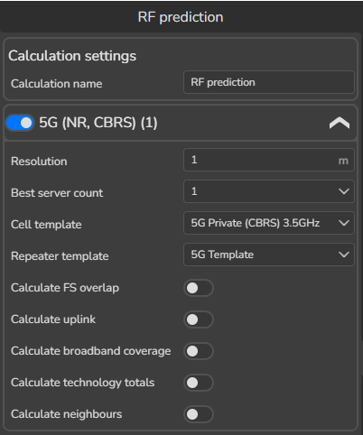
1. Open the RF Prediction tool. 2. Run the prediction for Cx002.- Open the resulting Field Strength output from Prediction History.
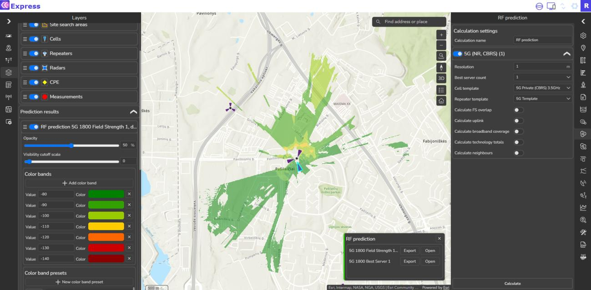
It will provide coverage results where only LOS condition exist.